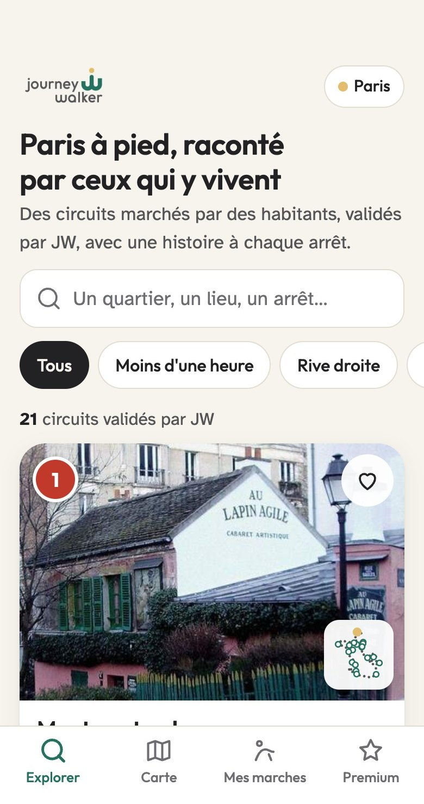

See Journey Walker working
Self-guided walks traced by the people who live in Paris. Two demos, built in November 2026.
The AI voice guide
- In front of the Saint-Germain-des-Prés church, the guide presents the stop.
- The walker asks out loud: “Is anyone famous buried in this church?”
- The guide starts answering by voice 1.1 seconds later, using only the Wikipedia article on the abbey.
Recorded on November 13, 2026. Real-time voice and transcription: Gradium API. Answers: the Wikipedia article on the abbey (CC BY-SA 4.0).
The visitor app

- Our 21 validated Paris routes, with their real stops, traces and photos.
- A map of Paris: tap a route, then a stop number.
- A photo tour before you go, a simulated walk, a step counter, and residents’ tips.
Version 0.2, November 18, 2026. Nothing you type is sent anywhere; the walk is simulated. Best on a phone or a computer.